<!DOCTYPE html>
<html><head><title>08. Cache Optimizations (Advanced Computer Architectures, SNU CSE)</title><meta charSet="utf-8"/><meta name="viewport" content="width=device-width, initial-scale=1.0"/><meta property="og:title" content="08. Cache Optimizations (Advanced Computer Architectures, SNU CSE)"/><meta property="og:description" content="서울대학교 컴퓨터공학부 유승주 교수님의 &amp;quot;고급 컴퓨터 구조&amp;quot; 강의를 필기한 내용입니다. 목차 Cache Size vs Associativity § 보통 memory size 가 커지면 물리적인 거리가 멀어져 access time 이 늘어나고, Cache 의 set associativity 에 따라서도 복잡도가 늘어나 access time 이 늘어난다."/><meta property="og:image" content="https://mdg.haeramk.im/static/og-image.png"/><meta property="og:width" content="1200"/><meta property="og:height" content="675"/><link rel="icon" href="../../../../../static/icon.png"/><meta name="description" content="서울대학교 컴퓨터공학부 유승주 교수님의 &amp;quot;고급 컴퓨터 구조&amp;quot; 강의를 필기한 내용입니다. 목차 Cache Size vs Associativity § 보통 memory size 가 커지면 물리적인 거리가 멀어져 access time 이 늘어나고, Cache 의 set associativity 에 따라서도 복잡도가 늘어나 access time 이 늘어난다."/><meta name="generator" content="Quartz"/><link rel="preconnect" href="https://fonts.googleapis.com"/><link rel="preconnect" href="https://fonts.gstatic.com"/><link href="../../../../../index.css" rel="stylesheet" type="text/css" spa-preserve/><link href="https://cdn.jsdelivr.net/npm/katex@0.16.0/dist/katex.min.css" rel="stylesheet" type="text/css" spa-preserve/><link href="https://fonts.googleapis.com/css2?family=IBM Plex Mono&amp;family=Gowun Batang:wght@400;700&amp;family=Gowun Dodum:ital,wght@0,400;0,600;1,400;1,600&amp;display=swap" rel="stylesheet" type="text/css" spa-preserve/><script src="../../../../../prescript.js" type="application/javascript" spa-preserve></script><script type="application/javascript" spa-preserve>const fetchData = fetch(`../../../../../static/contentIndex.json`).then(data => data.json())</script></head><body data-slug="gardens/arch/originals/aca.spring.2025.cse.snu.ac.kr/lectures/08.-Cache-Optimizations"><div id="quartz-root" class="page"><div id="quartz-body"><div class="left sidebar"><h1 class="page-title "><a href="../../../../..">Madison Digital Garden</a></h1><div class="spacer mobile-only"></div><div class="search "><div id="search-icon"><p>Search</p><div></div><svg tabIndex="0" aria-labelledby="title desc" role="img" xmlns="http://www.w3.org/2000/svg" viewBox="0 0 19.9 19.7"><title id="title">Search</title><desc id="desc">Search</desc><g class="search-path" fill="none"><path stroke-linecap="square" d="M18.5 18.3l-5.4-5.4"></path><circle cx="8" cy="8" r="7"></circle></g></svg></div><div id="search-container"><div id="search-space"><input autocomplete="off" id="search-bar" name="search" type="text" aria-label="Search for something" placeholder="Search for something"/><div id="results-container"></div></div></div></div><div class="darkmode "><input class="toggle" id="darkmode-toggle" type="checkbox" tabIndex="-1"/><label id="toggle-label-light" for="darkmode-toggle" tabIndex="-1"><svg xmlns="http://www.w3.org/2000/svg" xmlnsXlink="http://www.w3.org/1999/xlink" version="1.1" id="dayIcon" x="0px" y="0px" viewBox="0 0 35 35" style="enable-background:new 0 0 35 35;" xmlSpace="preserve"><title>Light mode</title><path d="M6,17.5C6,16.672,5.328,16,4.5,16h-3C0.672,16,0,16.672,0,17.5    S0.672,19,1.5,19h3C5.328,19,6,18.328,6,17.5z M7.5,26c-0.414,0-0.789,0.168-1.061,0.439l-2,2C4.168,28.711,4,29.086,4,29.5    C4,30.328,4.671,31,5.5,31c0.414,0,0.789-0.168,1.06-0.44l2-2C8.832,28.289,9,27.914,9,27.5C9,26.672,8.329,26,7.5,26z M17.5,6    C18.329,6,19,5.328,19,4.5v-3C19,0.672,18.329,0,17.5,0S16,0.672,16,1.5v3C16,5.328,16.671,6,17.5,6z M27.5,9    c0.414,0,0.789-0.168,1.06-0.439l2-2C30.832,6.289,31,5.914,31,5.5C31,4.672,30.329,4,29.5,4c-0.414,0-0.789,0.168-1.061,0.44    l-2,2C26.168,6.711,26,7.086,26,7.5C26,8.328,26.671,9,27.5,9z M6.439,8.561C6.711,8.832,7.086,9,7.5,9C8.328,9,9,8.328,9,7.5    c0-0.414-0.168-0.789-0.439-1.061l-2-2C6.289,4.168,5.914,4,5.5,4C4.672,4,4,4.672,4,5.5c0,0.414,0.168,0.789,0.439,1.06    L6.439,8.561z M33.5,16h-3c-0.828,0-1.5,0.672-1.5,1.5s0.672,1.5,1.5,1.5h3c0.828,0,1.5-0.672,1.5-1.5S34.328,16,33.5,16z     M28.561,26.439C28.289,26.168,27.914,26,27.5,26c-0.828,0-1.5,0.672-1.5,1.5c0,0.414,0.168,0.789,0.439,1.06l2,2    C28.711,30.832,29.086,31,29.5,31c0.828,0,1.5-0.672,1.5-1.5c0-0.414-0.168-0.789-0.439-1.061L28.561,26.439z M17.5,29    c-0.829,0-1.5,0.672-1.5,1.5v3c0,0.828,0.671,1.5,1.5,1.5s1.5-0.672,1.5-1.5v-3C19,29.672,18.329,29,17.5,29z M17.5,7    C11.71,7,7,11.71,7,17.5S11.71,28,17.5,28S28,23.29,28,17.5S23.29,7,17.5,7z M17.5,25c-4.136,0-7.5-3.364-7.5-7.5    c0-4.136,3.364-7.5,7.5-7.5c4.136,0,7.5,3.364,7.5,7.5C25,21.636,21.636,25,17.5,25z"></path></svg></label><label id="toggle-label-dark" for="darkmode-toggle" tabIndex="-1"><svg xmlns="http://www.w3.org/2000/svg" xmlnsXlink="http://www.w3.org/1999/xlink" version="1.1" id="nightIcon" x="0px" y="0px" viewBox="0 0 100 100" style="enable-background='new 0 0 100 100'" xmlSpace="preserve"><title>Dark mode</title><path d="M96.76,66.458c-0.853-0.852-2.15-1.064-3.23-0.534c-6.063,2.991-12.858,4.571-19.655,4.571  C62.022,70.495,50.88,65.88,42.5,57.5C29.043,44.043,25.658,23.536,34.076,6.47c0.532-1.08,0.318-2.379-0.534-3.23  c-0.851-0.852-2.15-1.064-3.23-0.534c-4.918,2.427-9.375,5.619-13.246,9.491c-9.447,9.447-14.65,22.008-14.65,35.369  c0,13.36,5.203,25.921,14.65,35.368s22.008,14.65,35.368,14.65c13.361,0,25.921-5.203,35.369-14.65  c3.872-3.871,7.064-8.328,9.491-13.246C97.826,68.608,97.611,67.309,96.76,66.458z"></path></svg></label></div></div><div class="center"><div class="page-header"><div class="popover-hint"><h1 class="article-title ">08. Cache Optimizations (Advanced Computer Architectures, SNU CSE)</h1><p class="content-meta ">Apr 01, 2025, 15 min read</p><ul class="tags "><li><a href="../../../../../tags/arch" class="internal tag-link">#arch</a></li><li><a href="../../../../../tags/originals" class="internal tag-link">#originals</a></li><li><a href="../../../../../tags/snu-aca25s" class="internal tag-link">#snu-aca25s</a></li></ul></div></div><article class="popover-hint"><blockquote class="callout" data-callout="info">
<div class="callout-title">
                  <div class="callout-icon"><svg xmlns="http://www.w3.org/2000/svg" width="100%" height="100%" viewBox="0 0 24 24" fill="none" stroke="currentColor" stroke-width="2" stroke-linecap="round" stroke-linejoin="round"><circle cx="12" cy="12" r="10"></circle><line x1="12" y1="16" x2="12" y2="12"></line><line x1="12" y1="8" x2="12.01" y2="8"></line></svg></div>
                  <div class="callout-title-inner"><p>서울대학교 컴퓨터공학부 유승주 교수님의 &quot;고급 컴퓨터 구조&quot; 강의를 필기한 내용입니다. </p></div>
                  
                </div>
<ul>
<li><a href="../../../../../gardens/arch/originals/aca.spring.2025.cse.snu.ac.kr/(SNU-CSE)-Advanced-Computer-Architectures" class="internal" data-slug="gardens/arch/originals/aca.spring.2025.cse.snu.ac.kr/(SNU-CSE)-Advanced-Computer-Architectures">목차</a></li>
</ul>
</blockquote>
<h2 id="cache-size-vs-associativity">Cache Size vs Associativity<a aria-hidden="true" tabindex="-1" href="#cache-size-vs-associativity" class="internal"> §</a></h2>
<p>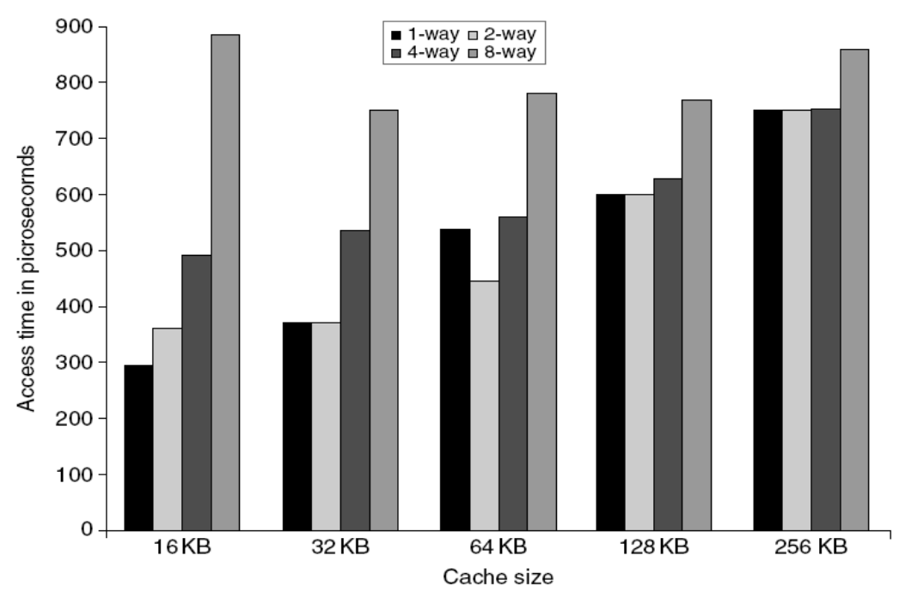</p>
<ul>
<li>보통 memory size 가 커지면 물리적인 거리가 멀어져 access time 이 늘어나고,</li>
<li>Cache 의 set associativity 에 따라서도 복잡도가 늘어나 access time 이 늘어난다.</li>
<li>그래서 위 그래프를 보면 hit 일때의 access time 을 보여주는 것인데, cache size 가 커질수록 access time 이 늘어나는 경향성을 보이고, 같은 cache size 일 때는 assiciativity 가 늘어남에 따라서도 access time 이 늘어나는 경향성을 볼 수 있다.</li>
<li>하지만 cache size 가 작아지는 것은 cache miss rate 을 늘리기에, <span class="math math-inline"><span class="katex"><span class="katex-html" aria-hidden="true"><span class="base"><span class="strut" style="height:0.8778em;vertical-align:-0.1944em;"></span><span class="mord mathnormal">A</span><span class="mord mathnormal">vgL</span><span class="mord mathnormal">a</span><span class="mord mathnormal">t</span><span class="mord mathnormal">e</span><span class="mord mathnormal">n</span><span class="mord mathnormal" style="margin-right:0.03588em;">cy</span><span class="mspace" style="margin-right:0.2778em;"></span><span class="mrel">=</span><span class="mspace" style="margin-right:0.2778em;"></span></span><span class="base"><span class="strut" style="height:0.7667em;vertical-align:-0.0833em;"></span><span class="mord mathnormal" style="margin-right:0.08125em;">H</span><span class="mord mathnormal">i</span><span class="mord mathnormal" style="margin-right:0.13889em;">tT</span><span class="mord mathnormal">im</span><span class="mord mathnormal">e</span><span class="mspace" style="margin-right:0.2222em;"></span><span class="mbin">+</span><span class="mspace" style="margin-right:0.2222em;"></span></span><span class="base"><span class="strut" style="height:0.7667em;vertical-align:-0.0833em;"></span><span class="mord mathnormal" style="margin-right:0.10903em;">M</span><span class="mord mathnormal">i</span><span class="mord mathnormal">ss</span><span class="mord mathnormal" style="margin-right:0.00773em;">R</span><span class="mord mathnormal">a</span><span class="mord mathnormal">t</span><span class="mord mathnormal">e</span><span class="mspace" style="margin-right:0.2222em;"></span><span class="mbin">×</span><span class="mspace" style="margin-right:0.2222em;"></span></span><span class="base"><span class="strut" style="height:0.6833em;"></span><span class="mord mathnormal" style="margin-right:0.10903em;">M</span><span class="mord mathnormal">i</span><span class="mord mathnormal">ss</span><span class="mord mathnormal" style="margin-right:0.13889em;">T</span><span class="mord mathnormal">im</span><span class="mord mathnormal">e</span></span></span></span></span> 을 고려하여 적당한 수준의 cache size 와 associativity 를 결정해야 한다.</li>
</ul>
<h2 id="way-prediction">Way Prediction<a aria-hidden="true" tabindex="-1" href="#way-prediction" class="internal"> §</a></h2>
<ul>
<li>위의 그래프를 보면 direct mapped cache (1-way) 의 경우에 latency 가 아주 짧은 것을 알 수 있다.</li>
<li>그래서 만약에 set-associative cache 에서 어떤 way 에 접근해야 할 지를 예측할 수 있다면, 모든 way 에 접근하지 않고 해당 way 에만 접근하면 되니까 direct mapped cache 의 latency 를 가져올 수 있다.</li>
<li>이때의 아이디어는 <a href="../../../../../gardens/arch/cpu/terms/Program-Counter,-PC-(CPU-Arch)" class="internal" data-slug="gardens/arch/cpu/terms/Program-Counter,-PC-(CPU-Arch)">PC</a> 이다: instruction 의 경우에는 jump 만 없으면 무조건 sequential 하게 접근하고, 하나의 cacheline 에는 여러개의 데이터 (통상의 64byte cacheline 이면 8개의 64bit instruction 이 담겨있으므로) 가 있으므로 한번 instruction 을 가져온 뒤에는 그 다음부터는 여러번에 걸쳐 해당 way 에 접근하게 된다.</li>
</ul>
<p>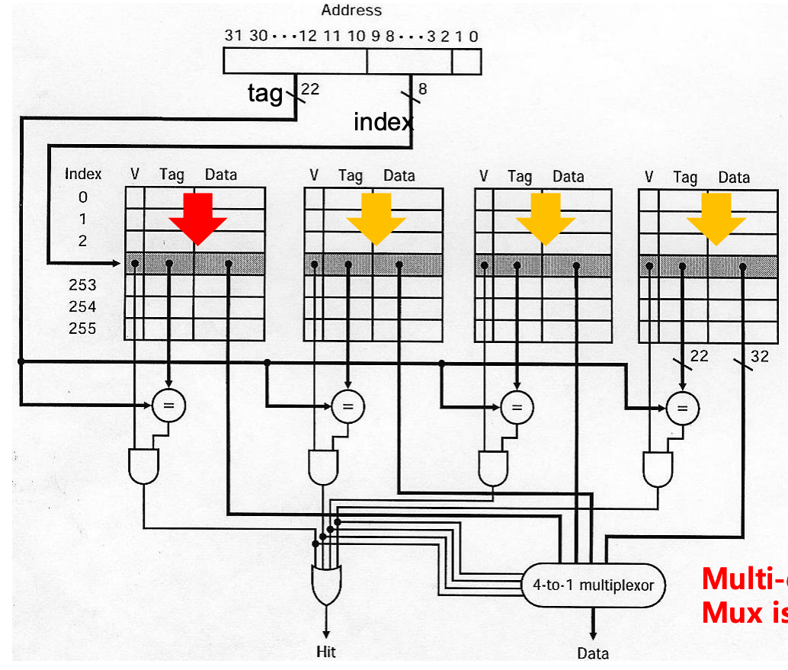</p>
<ul>
<li>따라서 위와 같은 전략을 취할 수 있다:
<ul>
<li>모든 way 에 대한 read 와 이전에 접근한 데이터의 way 에 대한 read 를 모두 보내, 이전에 접근한 데이터의 way 에 대해서는 multiplexor 를 거치지 않게 하고 모든 way 에 대해서는 multiplexor 를 거치게 한다.</li>
<li>만약 동일한 way 에 대해 hit 이면 훨씬 빠르게 종료되고 이것이 hit 이 아닐지라도 일반적인 N-way 에 대한 access time 이 그대로 적용되므로 손해볼 게 없는 셈.</li>
</ul>
</li>
</ul>
<p>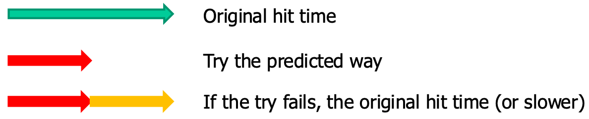</p>
<ul>
<li>그래서 이 때에는 hit 에도 fast hit 과 slow hit 두가지가 존재하게 된다.</li>
<li>정확도가 꽤나 높다고 한다: 위에서도 말한것 처럼 instruction fetch 의 경우에 jump 만 없다면 sequential access 를 하기 때문에 85% 정도의 accuracy 를 가진다고 한다.</li>
</ul>
<h3 id="lowering-cache-power-consumption">Lowering Cache Power Consumption<a aria-hidden="true" tabindex="-1" href="#lowering-cache-power-consumption" class="internal"> §</a></h3>
<p>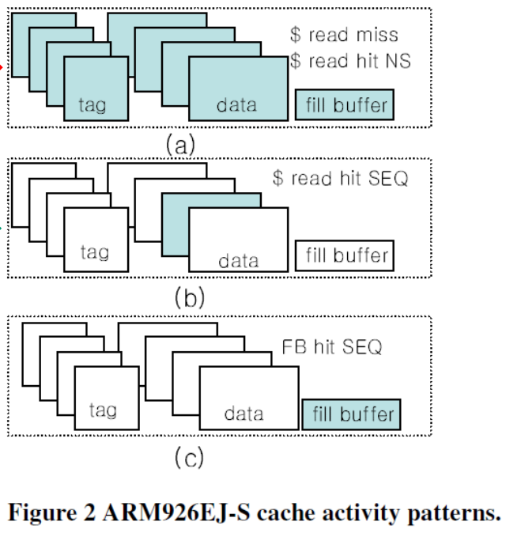</p>
<ul>
<li>동일한 원리를 이용해 cache 의 power consumption 을 낮출 수도 있다.</li>
<li>CPU 는 이미 instruction decode 를 하기 때문에, 다음에 실행할 instruction 이 jump 인지 아닌지 (즉, sequential 인지 아닌지) 를 알고 있고, 따라서 cache 에 SEQ signal 을 같이 보내면 cache 는 해당 way 에서만 찾으면 된다.</li>
<li>이렇게 하면 이전에 봤던 way 에서만 lookup 하면 되기 때문에 해당 way 의 memory 에만 접근하면 되고, 따라서 tag 에도 접근할 필요가 없어 power consumption 이 많이 줄어든다.</li>
<li>이 방법은 현재에도 ARM 기반 모바일 아키텍쳐에서 사용된다고 한다.</li>
</ul>
<h3 id="way-guard">Way Guard<a aria-hidden="true" tabindex="-1" href="#way-guard" class="internal"> §</a></h3>
<ul>
<li><em>Way Guard</em> 는 간단히 말하면 way prediction 을 할 때, <a href="../../../../../gardens/algorithm/data-structure/map/Bloom-Filter-(Data-Structure)" class="internal" data-slug="gardens/algorithm/data-structure/map/Bloom-Filter-(Data-Structure)">Bloom filter</a> 를 사용해서 lookup 할 way 를 걸러내자는 아이디어이다.</li>
<li>일단 Many-way architecture 부터 살펴보자.</li>
</ul>
<h4 id="serial-tag-data-access">Serial Tag-Data Access<a aria-hidden="true" tabindex="-1" href="#serial-tag-data-access" class="internal"> §</a></h4>
<ul>
<li>지금까지는 아래 그림처럼 Tag-Data 를 parallel 하게 접근하는 방식을 배워왔다.</li>
</ul>
<p>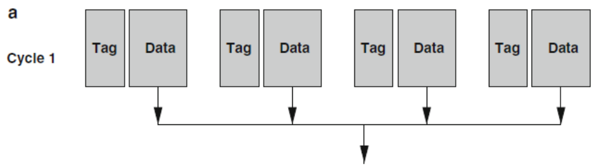</p>
<ul>
<li>근데 이것은 <a href="../../../../../gardens/arch/cache/drafts/L1,-L2,-L3-Cache-(Arch)" class="internal" data-slug="gardens/arch/cache/drafts/L1,-L2,-L3-Cache-(Arch)">L1 Cache</a> 에서만 쓰인다. L1 cache 에서는 latency 를 위해 이 방식을 취하지만 L2 이상부터는 cache size 가 크기 때문에 way 개수를 늘리기 위해 이런식으로 Tag-Data 를 serial 하게 접근하는 방식을 취한다.</li>
</ul>
<p>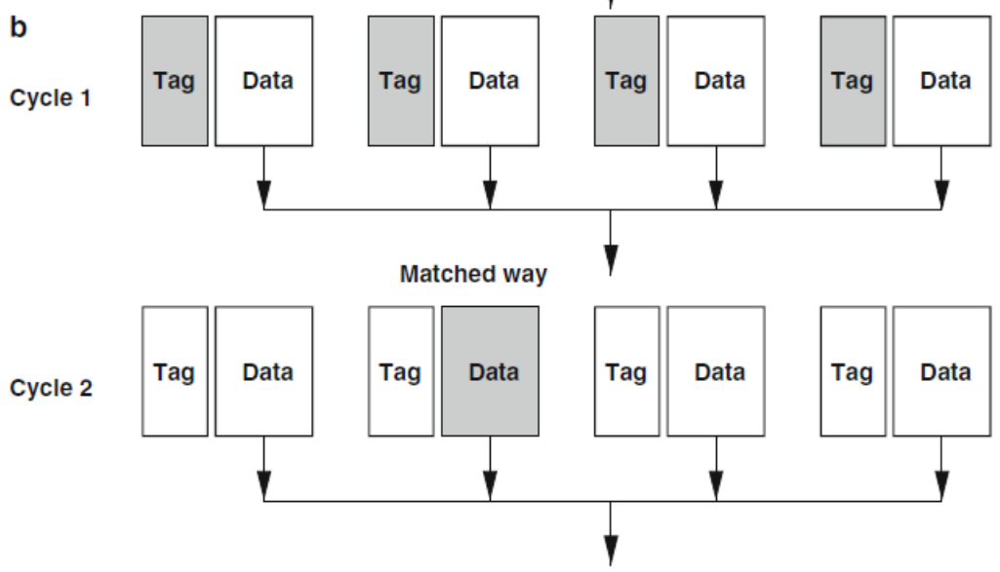</p>
<ul>
<li>즉, 우선 tag 를 parallel 하게 접근해서 어떤 way 인지 확정하고, 그 다음에 해당 way 에 대한 data 에 접근하는 것.</li>
<li>L2 이상부터는 16, 32 way 등 way 의 개수가 아주 많기 때문에 power consumption 을 줄이기 위해 다소 latency 는 높더라도 위와 같은 방식을 사용한다.</li>
<li>하지만 이렇게 하더라도 power consumption 은 다소 높을 수 있다. 왜냐면 tag 는 결국에는 모두 접근해야 하기 때문.</li>
</ul>
<p>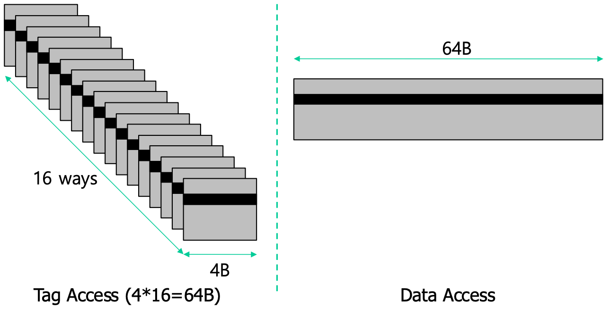</p>
<ul>
<li>위 그림을 보면 tag 가 하나에 4byte 에 불과하긴 하지만 16-way 이기 때문에 tag 에 접근하는 데에만 64byte 를 읽어야 한다.</li>
<li>이것을 어떻게 하면 더 줄일수 있을까? 가 way guard 의 시발점이다.</li>
</ul>
<h4 id="counting-bloom-filter">Counting Bloom Filter<a aria-hidden="true" tabindex="-1" href="#counting-bloom-filter" class="internal"> §</a></h4>
<ul>
<li>우선 <em>Counting Bloom Filter</em> 라는 것은 그냥 Bloom Filter 인데 access count 까지 하는 것이다.</li>
</ul>
<p>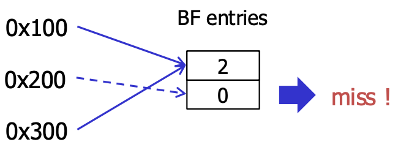</p>
<ul>
<li>그래서 위와 같이 Bloom filter entry 가 두개 있는 경우에 <code>0x100</code> 와 <code>0x300</code> 이 접근했을때의 counter 값은 2 가 되고, 뒤이어 <code>0x200</code> 가 접근하면 counter 값이 0 이기 때문에 <code>0x200</code> 는 한번도 접근한 적이 없구나 (즉, miss 이구나) 를 알 수 있게 되는 것이다.</li>
<li>즉, 이 상황은 true negative 인 것.</li>
</ul>
<p>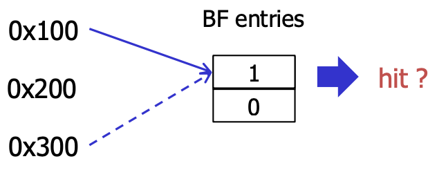</p>
<ul>
<li>반대로 conflict 에 의해 false positive 도 발생한다. 이때는 통상의 bloom filter 에서처럼 hit 인지 아닌지 직접 확인해줘야 하는 것.</li>
<li>참고로 이러한 bloom filter 를 <em>Non-membership Function</em> 이라고 한다. 즉, 포함되어 있다 (membership) 는 정보는 확실하게 알 수 없지만, 포함되어 있지 않다 (non-membership) 는 정보는 확실하게 알 수 있게 해주는 함수인 것.</li>
</ul>
<h4 id="way-guard-mechanism">Way Guard Mechanism<a aria-hidden="true" tabindex="-1" href="#way-guard-mechanism" class="internal"> §</a></h4>
<p>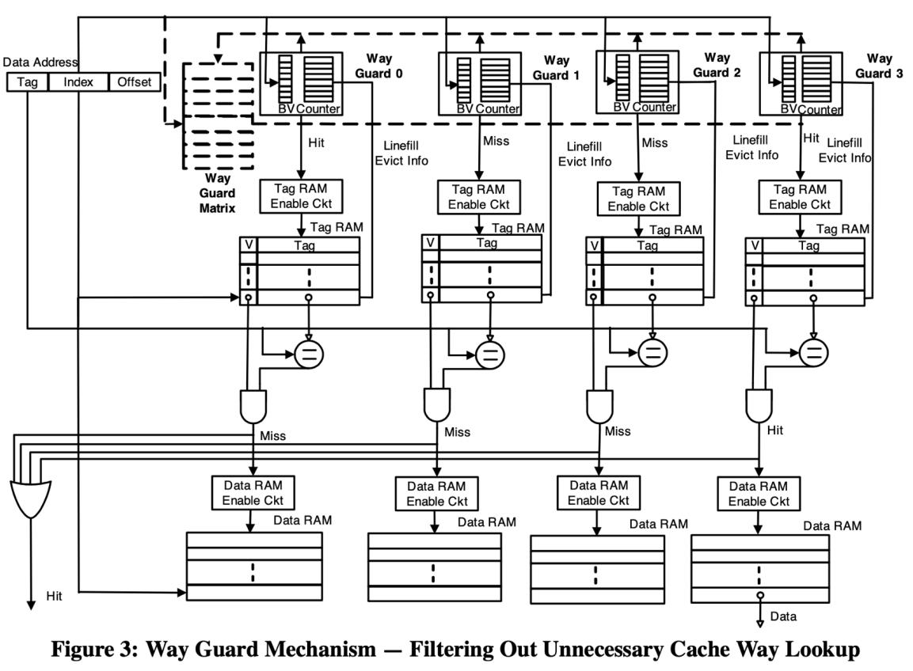</p>
<ul>
<li>그래서 이 <em>Counting Bloom Filter</em> 를 각 way 마다 배치해서 확실하게 miss 인 way 에 대해서 filtering 하는 위와 같은 구조를 <em>Way Guard</em> 라고 한다.
<ul>
<li>위 그림에서는 4-way 가 예시로 그려져 있고, 위쪽에 4개의 way guard 가 있는 것을 확인할 수 있을 것이다.</li>
</ul>
</li>
<li>이때 저 counter 에 대한 wraparound 및 cache evict 시에 어떻게 작동할지는 아주 복잡한 engineering 이 필요하다.
<ul>
<li>왜냐면 wraparound 가 되지 않으면 다시 0 이 되기 때문에 miss 라고 잘못 판단하거나</li>
<li>Evict 시에는 저 counter 값을 내려주거나 해야 되기 때문</li>
<li>Naive 하게는 warparound 를 할 때 해당 counter 에 해당하는 cacheline 을 전부 flush 해버리고 0 이되게 할 수도 있다 (당연히 성능은 구리다).</li>
<li>구체적인 것은 궁금하면 직접 찾아보자.</li>
</ul>
</li>
</ul>
<h2 id="pipelining">Pipelining<a aria-hidden="true" tabindex="-1" href="#pipelining" class="internal"> §</a></h2>
<ul>
<li>이거는 별 내용은 없다. 그냥 위에서 말한 L2 이상의 cache 에서 Tag-Data serial access 를 할 때,</li>
</ul>
<p>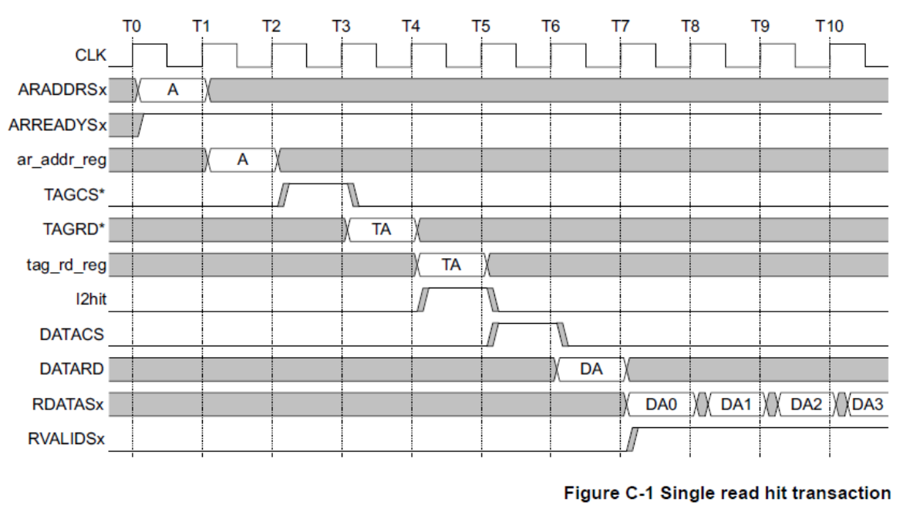</p>
<ul>
<li>위 그림처럼 Tag 와 Data access 를 pipeline 으로 하여 latency 를 줄이고자 하는 것이다.
<ul>
<li>위 그림에서 구체적인 것은 강의에서 다루지 않았기 때문에 넘어가자.</li>
</ul>
</li>
</ul>
<h2 id="non-blocking-cache">Non-Blocking Cache<a aria-hidden="true" tabindex="-1" href="#non-blocking-cache" class="internal"> §</a></h2>
<ul>
<li><em>Non-Blocking Cache</em> 혹은 <em>Lockup-free Cache</em> 는 말 그대로 miss 시에 service 가 중단되지 (blocking) 않는 cache 를 말한다.</li>
</ul>
<p>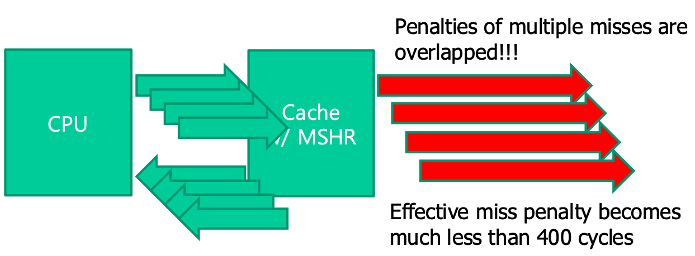</p>
<ul>
<li>즉, miss 가 발생했을 때 다른 hit 은 여전히 빠르게 처리되고 (<em>hit under miss</em>)</li>
<li>Miss 가 발생했을 때 다른 miss 가 나도 이놈이 parallel 하게 처리되어 (miss under multiple misses) 전체적인 miss penalty 가 작아진다.</li>
</ul>
<h3 id="miss-state-holding-register-mshr">Miss State Holding Register (MSHR)<a aria-hidden="true" tabindex="-1" href="#miss-state-holding-register-mshr" class="internal"> §</a></h3>
<p>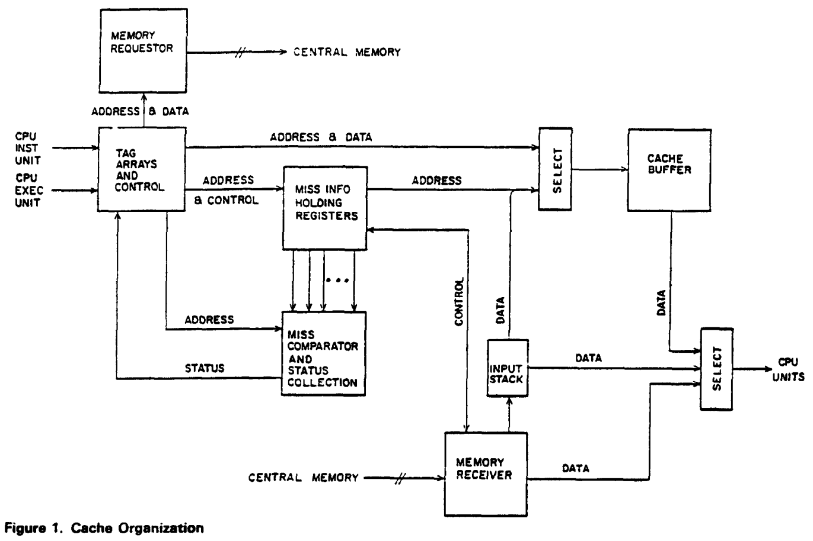</p>
<blockquote>
<p>출처: <a href="https://courses.cs.washington.edu/courses/cse548/11au/Kroft-Lockup-Free-Instruction-Fetch.pdf" class="external">Kroft, 1981</a></p>
</blockquote>
<ul>
<li>이런 Non-blocking cache 를 구현하는 방법중 하나가 <em>Miss State Holding Register</em> (<em>MSHR</em>) 이다.</li>
<li>위 그림에서 가운데 보면 Miss Info Holding Register 가 있는데, 이놈이 동일한 역할을 한다.</li>
<li>이놈이 하는 것은 어떤 miss 가 처리되고 있는지 추적하여 위에서 말한 Non-blocking service 를 제공해주거나,</li>
<li>만약에 address 는 다르지만 해당 address 에 대한 cacheline 이 이미 miss 로 처리되고 있다면 동일한 request 가 lower memory 로 날라가지 않게 해준다.</li>
</ul>
<h2 id="multi-banked-cache">Multi-Banked Cache<a aria-hidden="true" tabindex="-1" href="#multi-banked-cache" class="internal"> §</a></h2>
<p>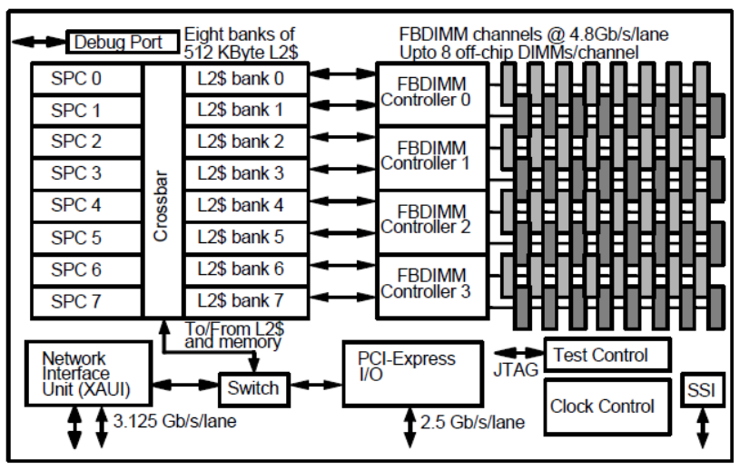</p>
<ul>
<li>위 그림에서 보이는 것처럼 L2 cache 의 경우에 여러개의 bank (즉, memory) 로 구성하기도 한다.</li>
<li>그리고 각 bank 는 서로 다른 address space 를 담당하게 된다.
<ul>
<li>즉, address 의 일부 bit 를 사용하는 hashtable 인 셈이다.</li>
</ul>
</li>
<li>이렇게 하면 여러 L2 cache request 가 parallel 하게 처리될 수 있게 된다.</li>
</ul>
<h3 id="avoiding-bank-conflict">Avoiding Bank Conflict<a aria-hidden="true" tabindex="-1" href="#avoiding-bank-conflict" class="internal"> §</a></h3>
<ul>
<li>하지만 저 bank 들 각각이 서로 다른 address space 를 담당하고 있기 때문에 운이 없으면 하나의 bank 에 request 가 몰리게 되는 상황이 발생할 수 있댜.
<ul>
<li>이때를 <em>Bank Conflict</em> 라고 한다.</li>
</ul>
</li>
</ul>
<p>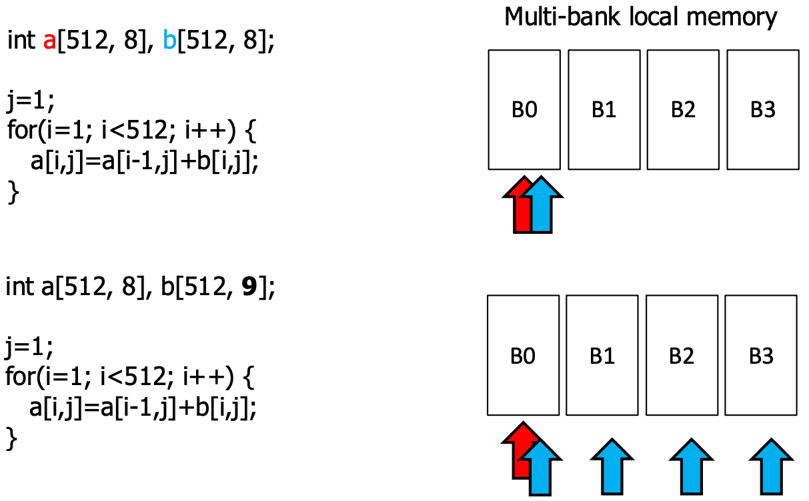</p>
<ul>
<li>이것을 해결하는 방법은 강의에서는 다루지 않고, 그냥 padding 을 활용하는 방법만을 소개한다.
<ul>
<li>위 그림에서처럼 array size 가 재수없게 bank conflict 를 유발하는 경우, padding 을 넣어 (즉, array size 를 살짝 더 키워) 모든 request 가 bank 에 고르게 분배되게 하여 bank conflict 를 피하는 방법이다.</li>
</ul>
</li>
</ul>
<h2 id="line-fill-buffer">Line Fill Buffer<a aria-hidden="true" tabindex="-1" href="#line-fill-buffer" class="internal"> §</a></h2>
<ul>
<li><a href="../../../../../gardens/arch/originals/shpc.fall.2024.cse.snu.ac.kr/drafts/01/Communication-Computation-Overlapping,-Latency-Hiding-(Arch)" class="internal" data-slug="gardens/arch/originals/shpc.fall.2024.cse.snu.ac.kr/drafts/01/Communication-Computation-Overlapping,-Latency-Hiding-(Arch)">Latency hiding</a> 을 적용하면 이렇게도 할 수 있다.</li>
</ul>
<p>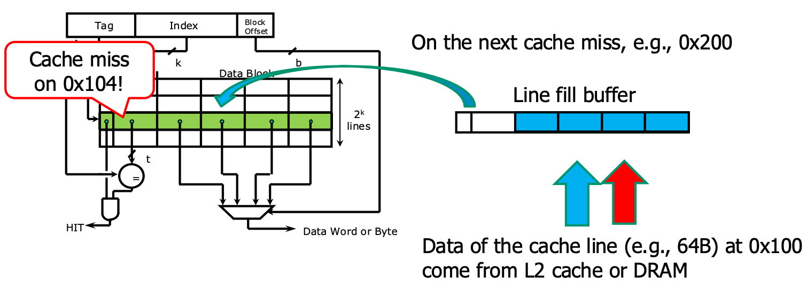</p>
<ul>
<li>Cache miss 가 나면 해당 cacheline 을 갖고와야 할 텐데, 지금 당장 CPU 가 원하는 address 의 데이터를 먼저 갖고와 <em>Line Fill Buffer</em> 에 넣어 CPU 가 가져가게 한다.
<ul>
<li>이렇게 “CPU 가 지금 당장 필요로 하는 데이터” 를 <em>Critical Word</em> 라고 하고,</li>
<li>이러한 데이터를 먼저 갖고오는 것을 <em>Critical Word First</em> 라고 한다.</li>
<li>위 그림에서는 오른쪽에 파란색 화살표가 가리키는 데이터가 <em>Critical Word</em> 라고 하자.</li>
</ul>
</li>
<li>이 <em>Line Fill Buffer</em> 는 <em>Critical Word</em> 부터 해서 차근차근 채워지고, 만약 CPU 가 다음 word (위 그림에서는 빨간색 화살표) 에 접근할 때는 이미 이놈이 <em>Line Fill Buffer</em> 에 올라와 있기 때문에 CPU 는 여기에서 바로 읽어가면 된다.</li>
<li>이 <em>Line Fill Buffer</em> 는 다음 cache miss 가 날때까지 여기에 있다가, cache miss 가 나면 원래의 way 로 복사되며 비워지고 miss 에 대한 데이터가 또 채워진다.</li>
<li>이런식으로 lower level cache 에서의 data transfer 와 CPU 에서의 data consumption 을 overlap 할 수 있다.</li>
<li>또한, 이렇게 하면 <em>Line Fill Buffer</em> 의 크기는 아주 작기 때문에 power consumption 도 많이 줄일 수 있다.</li>
</ul>
<h2 id="write-merging-coalescing">Write Merging (Coalescing)<a aria-hidden="true" tabindex="-1" href="#write-merging-coalescing" class="internal"> §</a></h2>
<p>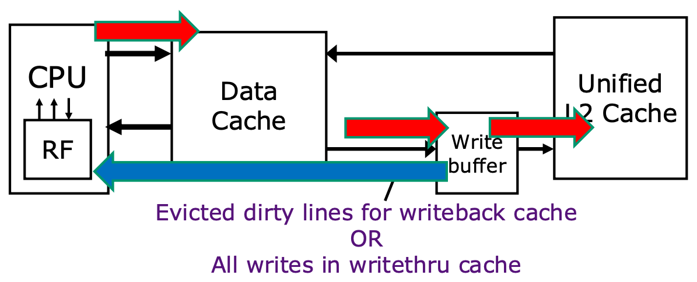</p>
<ul>
<li><em>Write Merging</em> (<em>Write Coalescing</em>) 은 cache 와 lower level cache 사이에 write buffer 를 두어서 lower level cache 로 내려가기 전에 잠깐 저장해두는 역할을 한다.</li>
<li>이렇게 하면 다음번의 write request 에도 동일하게 write buffer 의 내용이 overwrite 되기 때문에 여러번의 write 을 merge 해서 lower level 로 내려보내는 효과가 나기에 효율적이다.</li>
<li>또한 read 시에도 cache miss 가 발생했을 때 우연히 write buffer 에 있을 수도 있기 때문에 second chance 의 여지를 줄 수도 있다.</li>
<li>이 write buffer 의 내용은 write buffer 가 가득 차 evict 될 때 lower level cache 로 내려간다.</li>
</ul>
<h2 id="compiler-optimization">Compiler Optimization<a aria-hidden="true" tabindex="-1" href="#compiler-optimization" class="internal"> §</a></h2>
<ul>
<li>여기서는 loop 관련 optimization 세개를 소개하는데, 그중 두개는 <a href="../../../../../gardens/arch/originals/shpc.fall.2024.cse.snu.ac.kr/drafts/06/Loop-Fusion-(Arch)" class="internal" data-slug="gardens/arch/originals/shpc.fall.2024.cse.snu.ac.kr/drafts/06/Loop-Fusion-(Arch)">Loop fusion</a> 와 <a href="../../../../../gardens/arch/originals/shpc.fall.2024.cse.snu.ac.kr/drafts/06/Loop-Distribution-(Arch)" class="internal" data-slug="gardens/arch/originals/shpc.fall.2024.cse.snu.ac.kr/drafts/06/Loop-Distribution-(Arch)">Loop fission</a> 이다.</li>
<li>나머지 하나는 아래 그림에서의 예제로 보여지는 <em>Array Merging</em> 이다.</li>
</ul>
<p>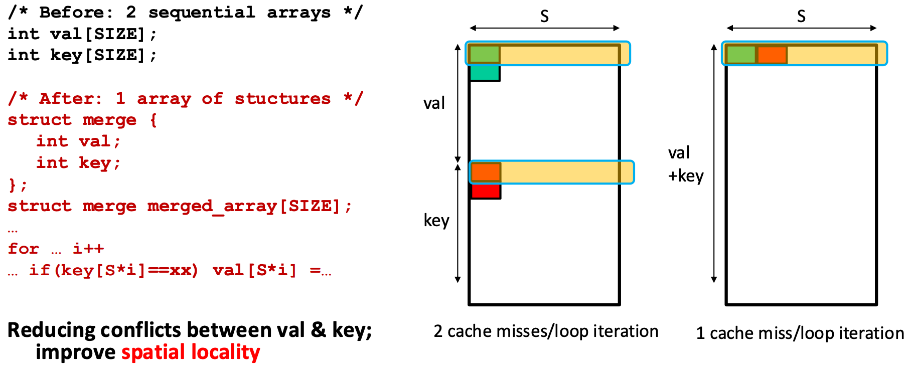</p>
<ul>
<li>여기에서는 key-value 자료구조에서 key array 와 value array 각각을 만드는 것과 key-value pair array 를 만드는 것 간의 차이를 보여준다.
<ul>
<li>따로 array 를 구성했을 때에는 key 에 접근할 때와 value 에 접근할때 두번의 cache miss 가 발생하지만</li>
<li>이것을 합치게 되면 key-value pair 에 대한 한번의 cache miss 만 발생하게 된다.</li>
</ul>
</li>
<li>이런식으로 array 를 합쳐서 cache miss 를 줄이는 것을 <em>Array Merging</em> 이라고 한다.</li>
</ul></article></div><div class="right sidebar"><div class="graph "><h3>Graph View</h3><div class="graph-outer"><div id="graph-container" data-cfg="{&quot;drag&quot;:true,&quot;zoom&quot;:true,&quot;depth&quot;:1,&quot;scale&quot;:1.1,&quot;repelForce&quot;:0.5,&quot;centerForce&quot;:0.3,&quot;linkDistance&quot;:30,&quot;fontSize&quot;:0.6,&quot;opacityScale&quot;:1,&quot;showTags&quot;:true,&quot;removeTags&quot;:[]}"></div><svg version="1.1" id="global-graph-icon" xmlns="http://www.w3.org/2000/svg" xmlnsXlink="http://www.w3.org/1999/xlink" x="0px" y="0px" viewBox="0 0 55 55" fill="currentColor" xmlSpace="preserve"><path d="M49,0c-3.309,0-6,2.691-6,6c0,1.035,0.263,2.009,0.726,2.86l-9.829,9.829C32.542,17.634,30.846,17,29,17
	s-3.542,0.634-4.898,1.688l-7.669-7.669C16.785,10.424,17,9.74,17,9c0-2.206-1.794-4-4-4S9,6.794,9,9s1.794,4,4,4
	c0.74,0,1.424-0.215,2.019-0.567l7.669,7.669C21.634,21.458,21,23.154,21,25s0.634,3.542,1.688,4.897L10.024,42.562
	C8.958,41.595,7.549,41,6,41c-3.309,0-6,2.691-6,6s2.691,6,6,6s6-2.691,6-6c0-1.035-0.263-2.009-0.726-2.86l12.829-12.829
	c1.106,0.86,2.44,1.436,3.898,1.619v10.16c-2.833,0.478-5,2.942-5,5.91c0,3.309,2.691,6,6,6s6-2.691,6-6c0-2.967-2.167-5.431-5-5.91
	v-10.16c1.458-0.183,2.792-0.759,3.898-1.619l7.669,7.669C41.215,39.576,41,40.26,41,41c0,2.206,1.794,4,4,4s4-1.794,4-4
	s-1.794-4-4-4c-0.74,0-1.424,0.215-2.019,0.567l-7.669-7.669C36.366,28.542,37,26.846,37,25s-0.634-3.542-1.688-4.897l9.665-9.665
	C46.042,11.405,47.451,12,49,12c3.309,0,6-2.691,6-6S52.309,0,49,0z M11,9c0-1.103,0.897-2,2-2s2,0.897,2,2s-0.897,2-2,2
	S11,10.103,11,9z M6,51c-2.206,0-4-1.794-4-4s1.794-4,4-4s4,1.794,4,4S8.206,51,6,51z M33,49c0,2.206-1.794,4-4,4s-4-1.794-4-4
	s1.794-4,4-4S33,46.794,33,49z M29,31c-3.309,0-6-2.691-6-6s2.691-6,6-6s6,2.691,6,6S32.309,31,29,31z M47,41c0,1.103-0.897,2-2,2
	s-2-0.897-2-2s0.897-2,2-2S47,39.897,47,41z M49,10c-2.206,0-4-1.794-4-4s1.794-4,4-4s4,1.794,4,4S51.206,10,49,10z"></path></svg></div><div id="global-graph-outer"><div id="global-graph-container" data-cfg="{&quot;drag&quot;:true,&quot;zoom&quot;:true,&quot;depth&quot;:-1,&quot;scale&quot;:0.9,&quot;repelForce&quot;:0.5,&quot;centerForce&quot;:0.3,&quot;linkDistance&quot;:30,&quot;fontSize&quot;:0.6,&quot;opacityScale&quot;:1,&quot;showTags&quot;:true,&quot;removeTags&quot;:[]}"></div></div></div><div class="toc desktop-only"><button type="button" id="toc"><h3>Table of Contents</h3><svg xmlns="http://www.w3.org/2000/svg" width="24" height="24" viewBox="0 0 24 24" fill="none" stroke="currentColor" stroke-width="2" stroke-linecap="round" stroke-linejoin="round" class="fold"><polyline points="6 9 12 15 18 9"></polyline></svg></button><div id="toc-content"><ul class="overflow"><li class="depth-0"><a href="#cache-size-vs-associativity" data-for="cache-size-vs-associativity">Cache Size vs Associativity</a></li><li class="depth-0"><a href="#way-prediction" data-for="way-prediction">Way Prediction</a></li><li class="depth-1"><a href="#lowering-cache-power-consumption" data-for="lowering-cache-power-consumption">Lowering Cache Power Consumption</a></li><li class="depth-1"><a href="#way-guard" data-for="way-guard">Way Guard</a></li><li class="depth-0"><a href="#pipelining" data-for="pipelining">Pipelining</a></li><li class="depth-0"><a href="#non-blocking-cache" data-for="non-blocking-cache">Non-Blocking Cache</a></li><li class="depth-1"><a href="#miss-state-holding-register-mshr" data-for="miss-state-holding-register-mshr">Miss State Holding Register (MSHR)</a></li><li class="depth-0"><a href="#multi-banked-cache" data-for="multi-banked-cache">Multi-Banked Cache</a></li><li class="depth-1"><a href="#avoiding-bank-conflict" data-for="avoiding-bank-conflict">Avoiding Bank Conflict</a></li><li class="depth-0"><a href="#line-fill-buffer" data-for="line-fill-buffer">Line Fill Buffer</a></li><li class="depth-0"><a href="#write-merging-coalescing" data-for="write-merging-coalescing">Write Merging (Coalescing)</a></li><li class="depth-0"><a href="#compiler-optimization" data-for="compiler-optimization">Compiler Optimization</a></li></ul></div></div><div class="backlinks "><h3>Backlinks</h3><ul class="overflow"><li><a href="../../../../../gardens/arch/originals/aca.spring.2025.cse.snu.ac.kr/(SNU-CSE)-Advanced-Computer-Architectures" class="internal">(SNU CSE) Advanced Computer Architectures</a></li></ul></div></div></div><footer class><hr/><p>Created with <a href="https://quartz.jzhao.xyz/">Quartz v4.1.0</a>, © 2025</p><ul><li><a href="https://github.com/haeramkeem">GitHub</a></li><li><a href="https://www.linkedin.com/in/haeram-kim-277404220">LinkedIn</a></li><li><a href="mailto:haeram.kim1@gmail.com">Email</a></li></ul></footer></div></body><script type="application/javascript">// quartz/components/scripts/quartz/components/scripts/callout.inline.ts
function toggleCallout() {
  const outerBlock = this.parentElement;
  outerBlock.classList.toggle(`is-collapsed`);
  const collapsed = outerBlock.classList.contains(`is-collapsed`);
  const height = collapsed ? this.scrollHeight : outerBlock.scrollHeight;
  outerBlock.style.maxHeight = height + `px`;
  let current = outerBlock;
  let parent = outerBlock.parentElement;
  while (parent) {
    if (!parent.classList.contains(`callout`)) {
      return;
    }
    const collapsed2 = parent.classList.contains(`is-collapsed`);
    const height2 = collapsed2 ? parent.scrollHeight : parent.scrollHeight + current.scrollHeight;
    parent.style.maxHeight = height2 + `px`;
    current = parent;
    parent = parent.parentElement;
  }
}
function setupCallout() {
  const collapsible = document.getElementsByClassName(
    `callout is-collapsible`
  );
  for (const div of collapsible) {
    const title = div.firstElementChild;
    if (title) {
      title.removeEventListener(`click`, toggleCallout);
      title.addEventListener(`click`, toggleCallout);
      const collapsed = div.classList.contains(`is-collapsed`);
      const height = collapsed ? title.scrollHeight : div.scrollHeight;
      div.style.maxHeight = height + `px`;
    }
  }
}
document.addEventListener(`nav`, setupCallout);
window.addEventListener(`resize`, setupCallout);
</script><script type="module">
          import mermaid from 'https://cdn.jsdelivr.net/npm/mermaid/dist/mermaid.esm.min.mjs';
          const darkMode = document.documentElement.getAttribute('saved-theme') === 'dark'
          mermaid.initialize({
            startOnLoad: false,
            securityLevel: 'loose',
            theme: darkMode ? 'dark' : 'default'
          });
          document.addEventListener('nav', async () => {
            await mermaid.run({
              querySelector: '.mermaid'
            })
          });
          </script><script src="https://cdn.jsdelivr.net/npm/katex@0.16.7/dist/contrib/copy-tex.min.js" type="application/javascript"></script><script src="https://www.googletagmanager.com/gtag/js?id=G-N68CCP1QHG" type="application/javascript"></script><script src="../../../../../postscript.js" type="module"></script></html>